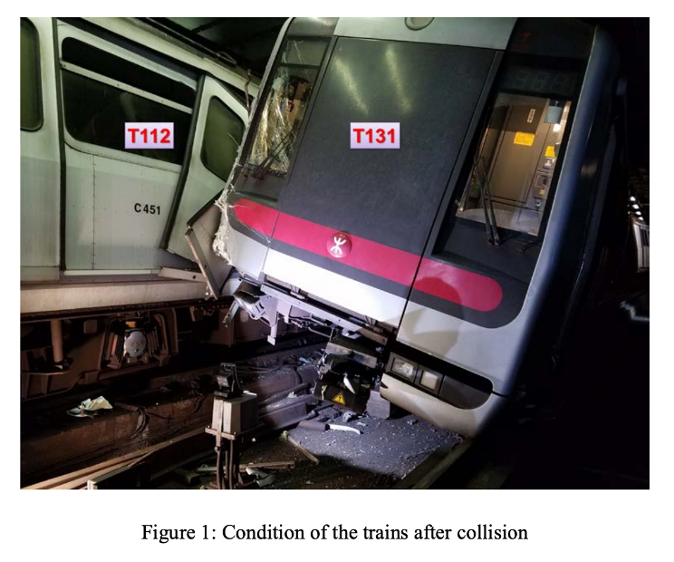
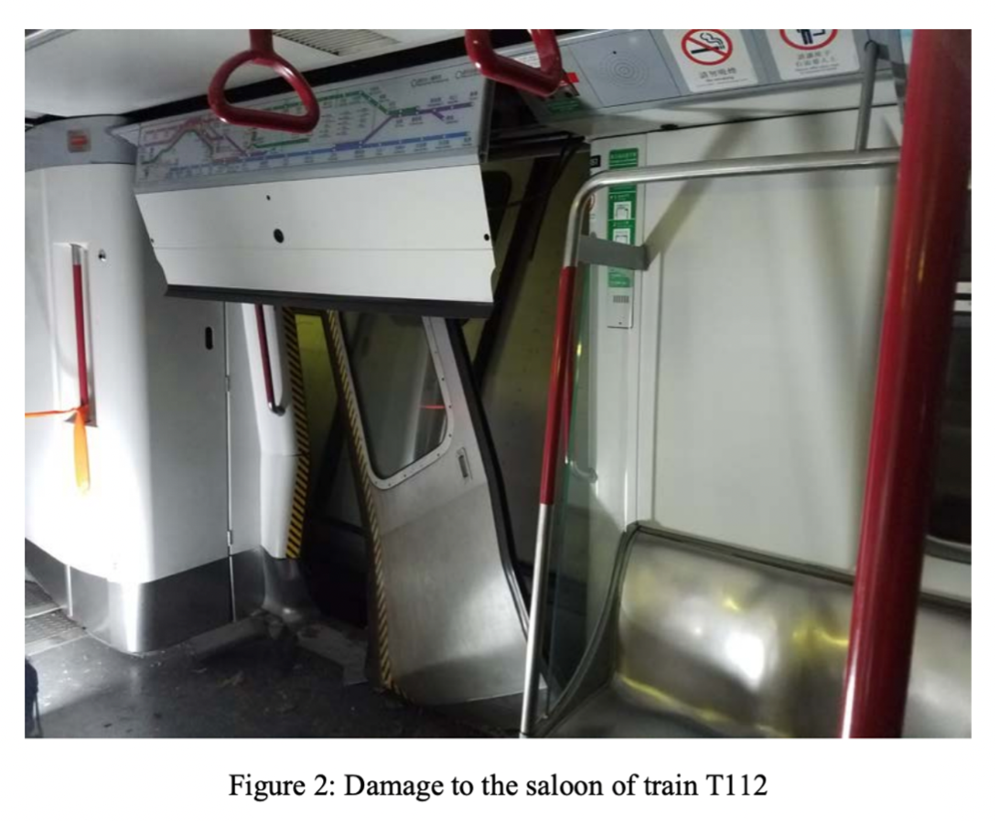

A train collision accident occurred while contractors were testing the new trains signing system during the non-transit hours on 18 Mar 2019 [1][2]. According to the investigation report by the Electrical and Mechanical Services Department (EMSD 2019) that the main reason is the newly developed signing system has not been tested adequately during the development stage and there has been a programming error in the altered existing system. The altered existing system could not be able to reproduce the data of the conflict zone when simulating the system failure of the primary system. As a result, the system could not be able to refrain two trains from entering the conflict zone at the same time and that's why the accident happened.
Luckily, there has been no loss of lives, but we can observe the condition of two trains after collision from the investigation report by EMSD (see Figures 1 & 2).
 Apart from the fixing cost for two damaged trains. There has a reputation implication for the MTR company. Safety must be the top priority for a transportation company. If the accident happens after the product is launched, there will be a lot of people get harmed. In addition, the MTR company over-relied on contractors during the implementation stage. The MTR company also should be accountable for the inadequate tests during the validation and verification stage of the newly developed signing system.